In this activity, you will create a virtual machine (VM) on Google Cloud to run a REST API code on node.js and connect your application to a Cloud SQL instance that you will create.
Students registered in the course can redeem their course credits for Google Cloud platform and use it for the activity and also for their course projects. The instruction to access Google Cloud course credit is provided under Course Information in BlackBoard.
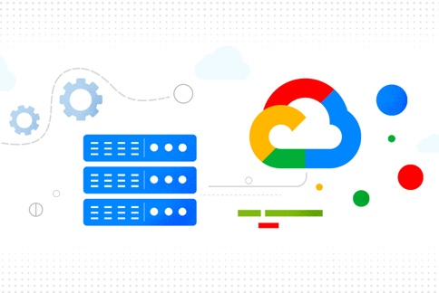
In this part, you will create a VM on Google Compute Engine.
VM Setup
- Go to the Google Cloud console page.
- Check the top of the page and make sure that you have an active project listed in the header bar and your billing account is active for your project.
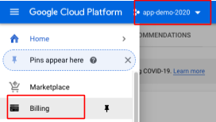
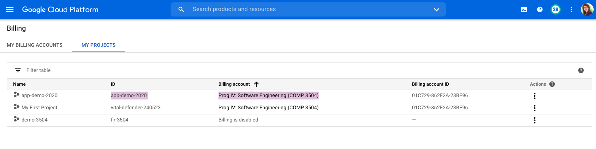
- Go to the Compute Engine tab and create a VM. Here is the detail you may use (vCPU: 2, Operating system: Ubuntu 18.04. Allow http and https traffic to your instance. Let the other parameters to stay in their default levels). Among these, the selection of the operating system is important to make sure that you can follow the commands in this activity.

- Click on save to create your instance and make sure that it is running.Your VM will receive a public IP that you can use to access services running in it.
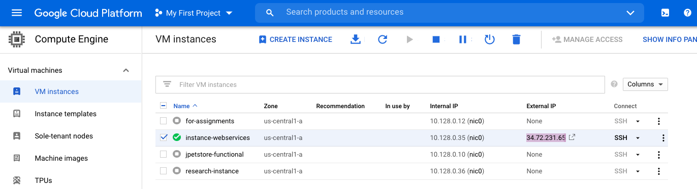
Network Setup
- If you will run an application that uses special ports, you need to open those ports in the firewall, otherwise, you will not be able to access the service. For this, you need to create new rules in your firewall. To access the firewall configurations, click on the "View network details" from the settings (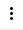) of your VM.
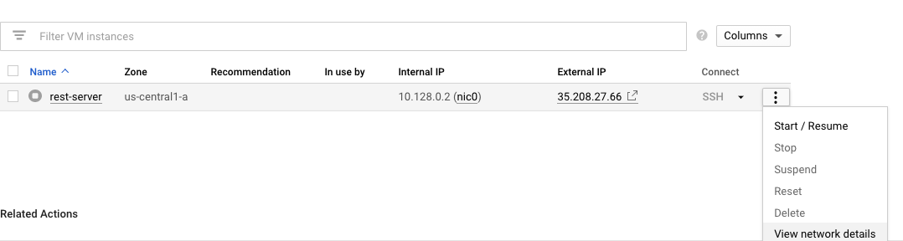
- Create a new rule, and assign a name for your rule, and add that in the target tags as well. Set the source IP to 0.0.0.0/0 to let clients be able to access your application from anywhere. Set the ports you want to open, e.g., 80, 443, 8080, 8081, 3306, under ‘Protocols and ports' or you may open all ports (not recommended).
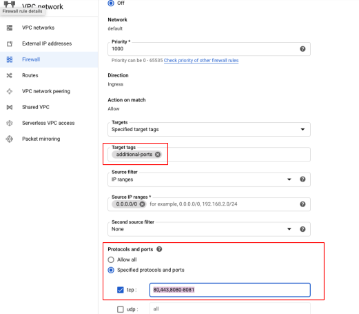
- After saving your rule, click on the name of your VM instance to edit its properties. Add the rule you defined to the network tags of your VM.
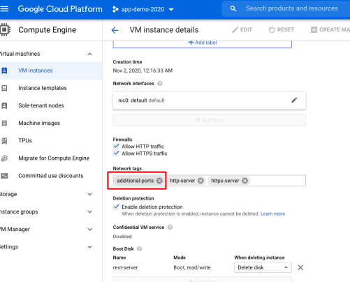
Setup Static IP
- When you start your VM, it receives a public IP address, but the address may change when you stop and restart the VM instance. If you want to keep your VM IP address to stay the same, you can assign a static IP address. This can be done in the network tab (right above the Firewall tab that you just worked with).
- Reserve a standard static IP V4 address and attach it to your VM instance by selecting the name of your instance from the list. (Later, you can use this IP address to define the authorized networks for your CLoud SQL instance.)
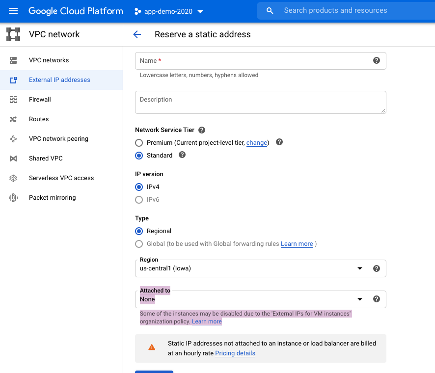
The following steps will help you to set up your Cloud SQL database. Here is the reference documentation that you may need.
Create your SQL instance
- Go to the Cloud SQL Instances page in the Google Cloud Console.
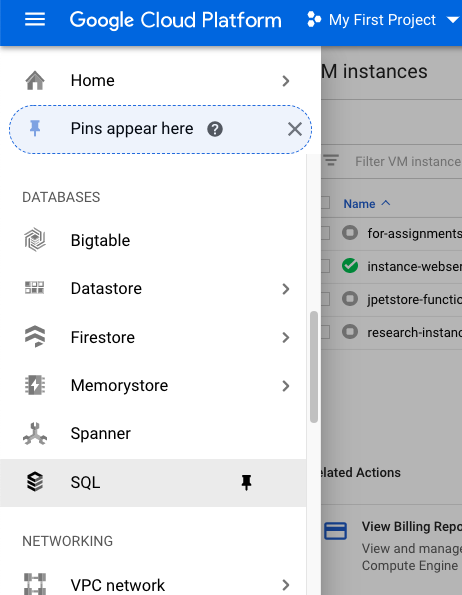
- If you have more than one project in your Cloud account, select your project and click Continue.
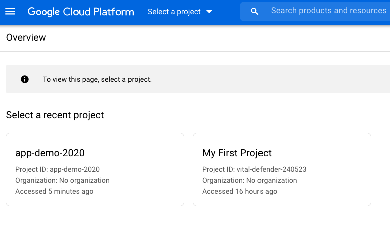
- Click Create Instance.
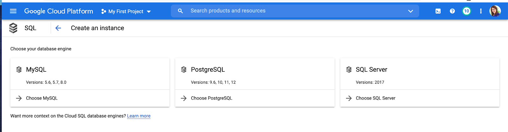
- Click MySQL.
- Enter my-instance for Instance ID.
- Enter a password for the root user. (You can also create new users with a password.)
- Use the default values for the other fields.
- Click Create.
- Go to the database tab and create a new database for your project, e.g., my_database.
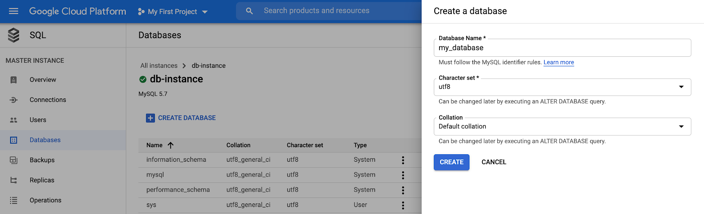
Connect to your instance using the mysql client in Cloud Shell
- Open Cloud Shell by clicking the Cloud Shell icon () in the upper right corner.
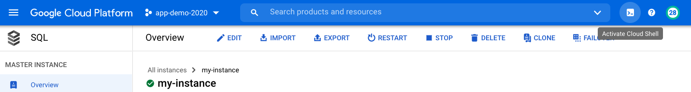
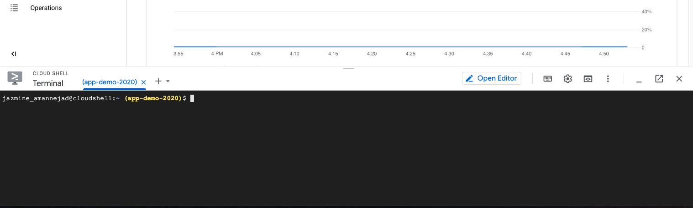
- Make sure that your project is selected correctly (the name in color) in the Cloud Shell. If not, you can see the list of your projects and select a project using the following gCloud commands:
gcloud projects list
gcloud config set project my-project
- Now connect to your mysql database, using gCloud commands. Enter the name of instance and the database user with which you want to connect to the database. Then enter the password.
gcloud sql connect myinstance --user=root
- You can now enter mysql commands to use an existing database (
usemy_database), or see the existing databases (show databases;).
- You can list the existing tables (
show tables;) or create a table. This example here, is creating a table called rest_emp with four columns of name, phone, email, address.
CREATE TABLE rest_emp (id INT AUTO_INCREMENT PRIMARY KEY, name varchar(255) not null, phone varchar(12), email varchar(255) not null, address varchar(255)not null);
- You can enter data into your table. For example:
insert into rest_emp(name, phone, email, address) values ('Demo User', '111 111 1111', 'demo.user@test.com', '100 Street SW');
- View the results in your table:
select * from rest_emp;
The authorized networks for your database
- When your database is ready, make sure that you know the 1) public IP address of your instance, and also 2) the name of your database, 3) the database user and 4) password. You can get the public IP address of your database from the overview page:
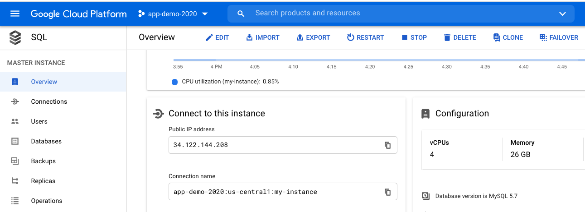
- If you want to connect to the database from a compute engine VM, you must assign a static IP to your VM and add the IP address of the VM in the list of the authorized networks.
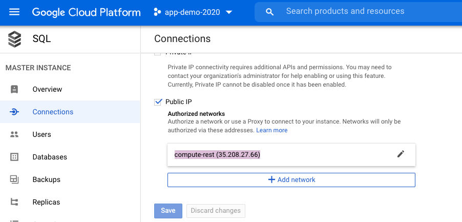